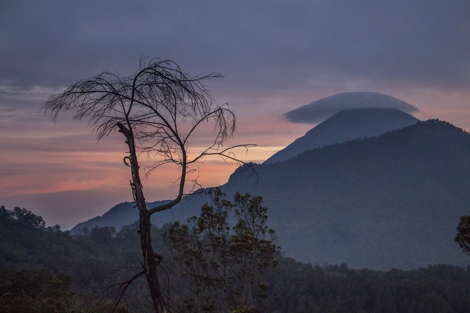

Pemandangan yang Bisa Dinikmati dari Pendakian Gunung Semeru
Mendaki gunung memang salah satu olahraga ekstrem, meskipun begitu banyak orang yang menggilai olahraga yang satu ini. Salah satu gunung yang menjadi favorit para pendaki adalah Gunung Semeru. Gunung yang terletak di Jawa Timur ini sangat terkenal apalagi setelah Film 5 cm tayang di bioskop. Jalur pendakian Gunung Semeru semakin ramai dikunjungi para pendaki yang ingin merasakan langsung keindahannya.
Terkenal dengan pemandangannya yang mempesona, area jalur pendakian Gunung Semeru menjadi kenangan tersendiri bagi para pecinta alam. Selama perjalanan kamu bisa melihat pesona nan eksotis yang dimiliki Gunung Semeru. Pemandangan apa aja yang bisa kita temui di jalur pendakian Gunung Semeru? Ini dia Jawabannya!
Ranu PaniRanu Pani adalah salah satu pos pendakian di Gunung Semeru. Ranu Pani sebenarnya ada di sebuah desa yang ketinggiannya mencapai 2.100 meter diatas permukaan laut. Bisa dibilang Desa Ranu Pani adalah desa terakhir sebelum mencapai puncak Gunung Semeru. Pemandangan alam seperti apa yang bisa dinikmati oleh pendaki di Ranu Pani?
Nah, kalau ngomongin soal keindahan alam, di sini kamu bisa menjumpai danau Ranu Pani. Danau ini sangat populer karena keindahannya lho. Banyak pendaki yang memilih bermalam di sekitar danau sebelum melanjutkan pendakian sebelum ke puncak Mahameru.
Kalau keindahan danau yang satu ini nampaknya udah nggak asing lagi ya. Ranu Kumbolo jadi salah satu icon keindahan alam yang identik dengan Gunung Semeru. Saking indahnya, banyak pendaki yang tujuan utama pendakiannya hanya untuk melihat Ranu Kumbolo. Memangnya sekeren apa sih Ranu Kumbolo?
Danau ini terletak di ketinggian 2.389 mdpl. Untuk ukuran danaunya sendiri cukup luas, mencapai 15 ha. Sama seperti Ranu Pani, Ranu Kumbolo juga banyak dipilih pendaki untuk bermalam sebelum melanjutkan pendakian. Hal yang paling mempesona dari Ranu Kumbolo sebenarnya terletak pada kejernihan airnya, namun agar tetap terjaga kelestariannya, para pendaki dilarang mandi ataupun berenang di Ranu Kumbolo.
Tanjakan Cinta, namanya memang cukup unik ya. Sebenarnya tanjakan cinta hanyalah tanjakan yang memiliki kemiringan 45 derajat. Jika dilihat sekilas sih memang kelihatannya hanya seperti tanjakan di gunung pada umumnya, lalu apa sih yang membuat tanjakan cinta berbeda?
Sebenarnya yang bikin Tanjakan Cinta menari adalah mitos yang menyelimutinya. Konon bagi orang-orang yang melewati tanjakan ini sambil memikirkan pasangannya dan melewati tanjakan tanpa menoleh ke belakang, maka hubungan mereka akan berakhir bahagia. Namun sebaliknya, jika mereka menoleh ke belakang, hubungan mereka akan berakhir. Wah, kedengarannya agak aneh ya.
Pemandangan lain yang bisa kamu nikmati di jalur pendakian Gunung Semeru berikutnya adalah Oro-Oro Ombo. Namanya terdengar agak asing ya, tapi sebenarnya Oro-Oro Ombo adalah sebuah padang savana di Gunung Semeru. Lokasinya nggak jauh dari Ranu Kumbolo dan tanjakan.
Hal menarik yang bisa kamu temui di Oro-Oro Ombo yaitu bunga verbana berwarna ungu yang tumbuh sejauh mata memandang. Namun sayangnya bunga ini hanya mekar di bulan April sampai Mei. Jadi kalau kamu pengen lihat keindahan bunga verbana, jangan lupa pilih waktu yang tepat ya.